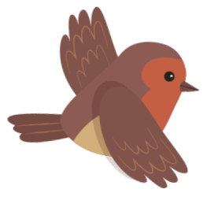

Website ini dibangun untuk turut serta dalam ajang Data Storyteling Challenge 2023 (DSC 2023) dengan tema :Unleash the Power of Data: Where Stories Come to Life!"
@Tim Ewako 7300
@Tim Ewako 7300
Beranda
Putri, 16 tahun, sepulang sekolah telah membayangkan rutinitasnya setiap hari. Mengerjakan PR dan membantu ibunya, Rani, untuk menyiapkan makan malam. Keluarga Putri terbilang sederhana makan dengan nasi dan sayur saja dirasa cukup mengisi perut yang lapar di malam hari.
Saat makan malam bersama, ayah Putri, Pak Salim memulai percakapan… “Putri, Minggu depan akan ada yang datang melamar kamu..”. “Dia masih keluarga jauh kita …”

Pembangunan kualitas remaja menjadi isu penting dikarenakan remaja merupakan aset bangsa sekaligus sebagai calon penggerak pembangunan.
Untuk itu, perlindungan dan pemberian hak atas hidup pada remaja seperti hak pendidikan, hak kesehatan, hak atas perlindungan dari kekerasan dan diskriminasi, serta hak atas partisipasi dalam bermasyarakat menjadi perhatian pemerintah. Salah satu permasalahan terkait remaja adalah tingkat fertilitas remaja.
Penurunan tingkat fertilitas remaja menjadi agenda global pembangunan yang tertuang dalam Tujuan Pembangunan Berkelanjutan (TPB) atau yang dikenal dengan Sustainable Development Goals (SDGs)
Untuk itu, perlindungan dan pemberian hak atas hidup pada remaja seperti hak pendidikan, hak kesehatan, hak atas perlindungan dari kekerasan dan diskriminasi, serta hak atas partisipasi dalam bermasyarakat menjadi perhatian pemerintah. Salah satu permasalahan terkait remaja adalah tingkat fertilitas remaja.
Penurunan tingkat fertilitas remaja menjadi agenda global pembangunan yang tertuang dalam Tujuan Pembangunan Berkelanjutan (TPB) atau yang dikenal dengan Sustainable Development Goals (SDGs)

Remaja didefinisikan sebagai penduduk laki-laki atau perempuan yang berusia 10-19 tahun (UNICEF, 2021). Jika dibandingkan negara ASEAN, Indonesia menempati urutan ke lima tertinggi angka kelahiran per 1.000 perempuan umur 15-19 tahun (ASFR 15-19) (UNDP, 2022).
Angka kelahiran menurut umur tertentu (Age Spesific Fertility Rate atau ASFR) menunjukkan banyaknya kelahiran pada perempuan kelompok umur tertentu per 1000 perempuan pada kelompok umur tersebut
Angka kelahiran menurut umur tertentu (Age Spesific Fertility Rate atau ASFR) menunjukkan banyaknya kelahiran pada perempuan kelompok umur tertentu per 1000 perempuan pada kelompok umur tersebut
Grafik 1. ASFR menurut Negara Tahun 2022
Sumber : Human Development Report (UNDP, 2022)
Sumber : Human Development Report (UNDP, 2022)
Perkembangan tren ASFR selama 50 tahun terakhir, ASFR 15-19 tahun mengalami penurunan yang signifikan dari 155 pada SP 1971 menjadi 26,64 SP2020.
Grafik 2. Trend ASFR di Indonesia Tahun 2022
Sumber : Sensus Penduduk, BPS
Sumber : Sensus Penduduk, BPS
Angka Kelahiran per 1000 perempuan umur 15-19 tahun di perdesaan selalu lebih tinggi dibandingkan perkotaan. ASFR umur 15-19 tahun paling rendah di provinsi DKI Jakarta 7,9 dan paling tinggi di provinsi Kalimantan Tengah 63,13
Pembangunan infrastruktur sarana pendidikan/keterampilan dan ekonomi erat kaitannya terhadap penurunan tingkat ASFR remaja. Semakin banyak jumlah sarana pendidikan, semakin rendah ASFR 15-19 tahun di suatu wilayah.
Peta Kelahiran per 1.000 Perempuan Umur 15-19 Tahun Provinsi di Indonesia, 2020
Sumber : Sensus Penduduk, BPS
Sumber : Sensus Penduduk, BPS
Grafik3. Hubungan antara Persentase Pembangunan Sarana Pendidikan dengan ASFR usia 15-19 Tahun
Sumber : PODES 2020 Dan Long Form SP2020
Sumber : PODES 2020 Dan Long Form SP2020
Kelompok umur 15-19 tahun merupakan kelompok penduduk usia sekolah, sehingga dengan peningkatan partisipasi sekolah terutama pada perempuan akan menurunkan kerentanan perempuan untuk melahirkan di usia remaja. Pada tahun 2022 angka partisipasi sekolah penduduk perempuan berumur 16-18 tahun sebesar 63,73 persen. Hal ini mengindikasikan bahwa dari 100 penduduk berumur 16-18 tahun terdapat 63 sampai 64 orang yang bersekolah.

Grafik4. Angka Partisipasi Sekolah Menurut Kelompok Umur
Sumber : Survei Sosial Ekonomi Nasional 2009-2022, BPS
Sumber : Survei Sosial Ekonomi Nasional 2009-2022, BPS
Tingkat fertilitas remaja yang tinggi dapat mengakibatkan berbagai hal. Tidak hanya berdampak pada fisik, namun juga sosial. Wilayah yang memiliki penduduk miskin yang tinggi cenderung memiliki tingkat kelahiran remaja yang tinggi pula, sebaliknya wilayah yang memiliki IPM yang tinggi memiliki tingkat kelahiran remaja yang rendah
Grafik5. Hubungan antara Persentase Penduduk Miskin dengan ASFR 15-19 Tahun
Sumber : Publikasi Kemiskinan Makro 2020 dan Long Form SP2020
Sumber : Publikasi Kemiskinan Makro 2020 dan Long Form SP2020
Grafik6. Hubungan antara Indeks Pembangunan Manusia Perempuan dengan ASFR 15-19 Tahun
Sumber : Publikasi IPM 2020 dan Long Form SP2020

Sumber : Publikasi IPM 2020 dan Long Form SP2020
Dibutuhkan intervensi budaya dan pemberdayaan perempuan pada pendidikan untuk menurunkan fertilitas remaja. Penolakan Putri dan dukungan dari Rani merupakan sebuah hal yang menjanjikan pada penurunan fertilitas remaja. Masa depan bangsa 10 tahun ke depan merupakan remaja yang berkualitas pada saat ini
TIM EWAKO 7300
SUMBER DATA
SUMBER GAMBAR
Subscribe
Naskah : Nike Dwi Putri
Badan Pusat Statistik
Elements/envanto.com
Email Address
Desain : Cholifa Fitri Annisa
UNDP
Freepik.com
Website : Mochamad Asryl Aziz
Pixabay.com
Behance.net
All Right Reserved - Copyright Ewako 7300
Canva.com
Adobe.com